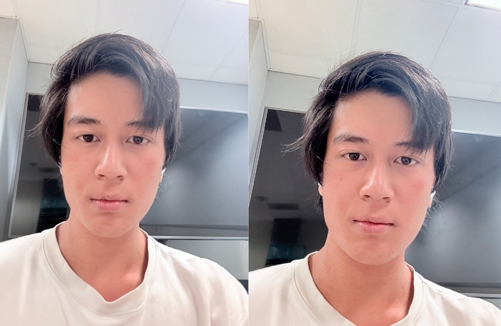

Project 0,
photography!
Part 1, selfie!
Spec: Take a picture of your friend (or yourself) from close up. You get a typical distorted selfie image. Now step back several feet from your subject, zoom in, and take a second picture. Try to get the face in the second photo to be the same size as in the first photo. If you've done things right, the second portrait should look much better than the first one.  The reason why this is the case is because the close up has different proportions! It distorts facial features. Yes.Part 2, Landscape!
Spec: Let's repeat the same procedure in reverse, for an urban scene. Pick a nice view down a long street (or a walking path on campus), zoom in, and take a photo. Now, walk down the street in the direction of your first shot, and take a second photo without zoom, such that the scene in the two photos appears approximately the same size. The first picture should look flattened, or compressed, compared to the second. Again, think about why. OMG its that one street.
OMG its that one street.
Part 3, Dolly Zoom!
Spec: In this part, we will be duplicating a classic film effect called the dolly zoom. It is a camera movement also known as the "Vertigo shot", after a famous scene in Hitchcock's Vertigo. Here are some examples of this effect in cinema:Done on snoopy mug. Great Snoopy mug.